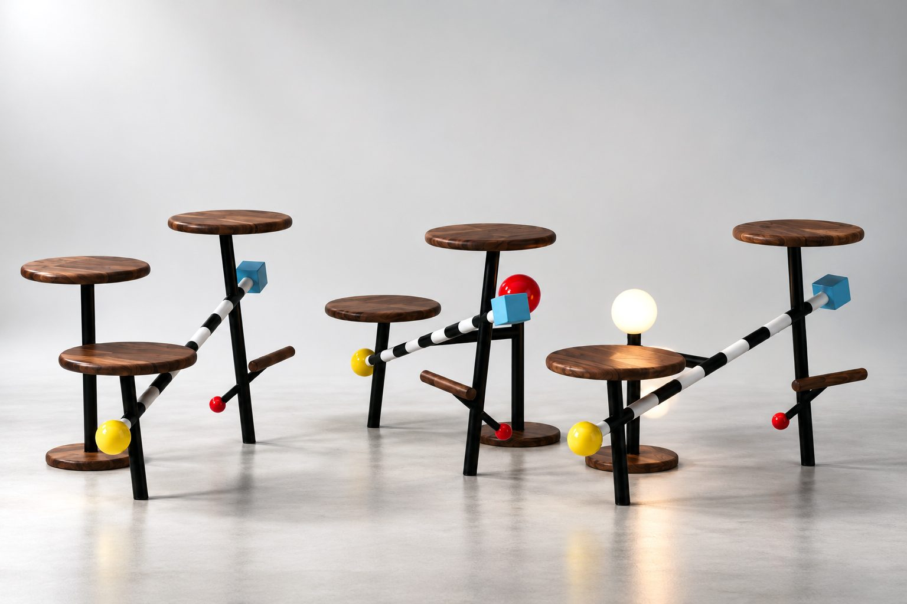
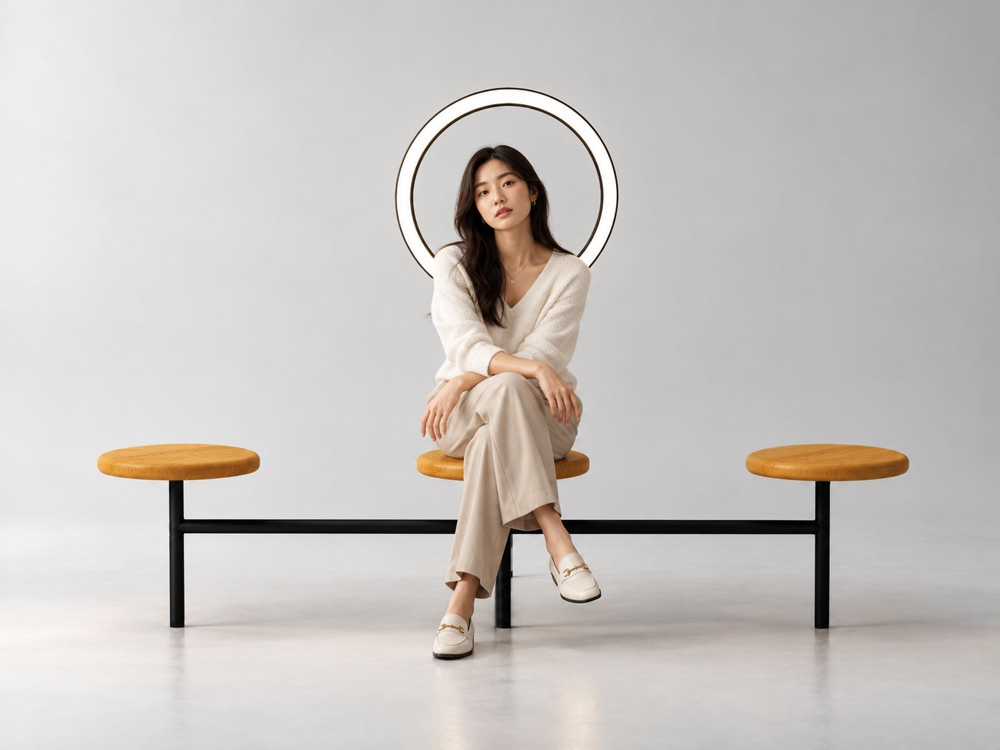
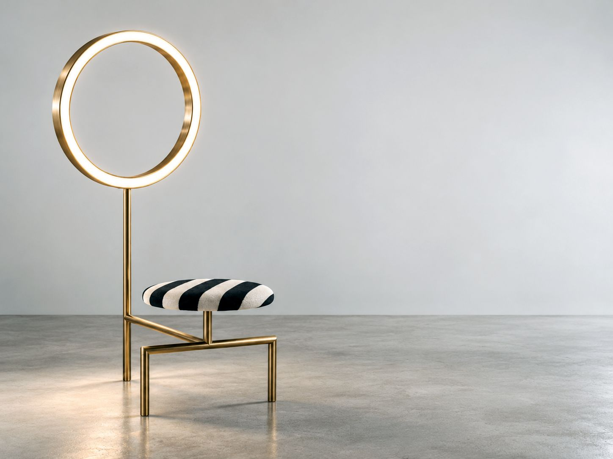
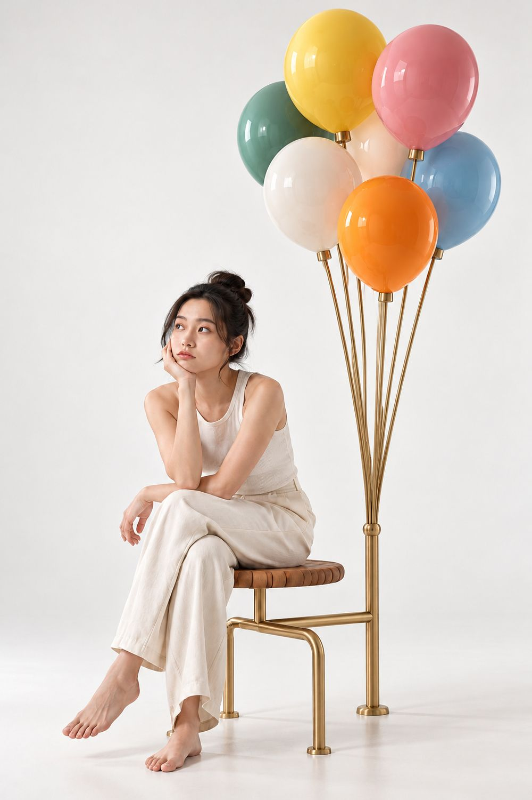
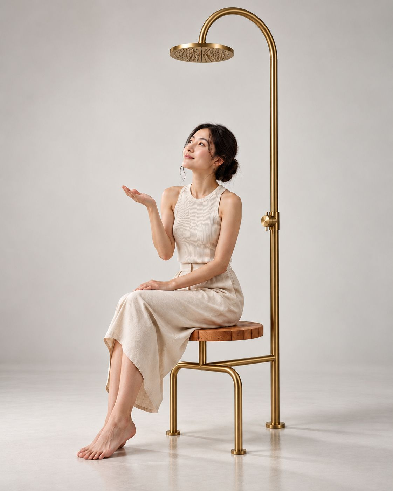
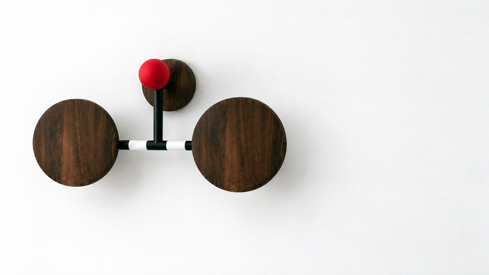
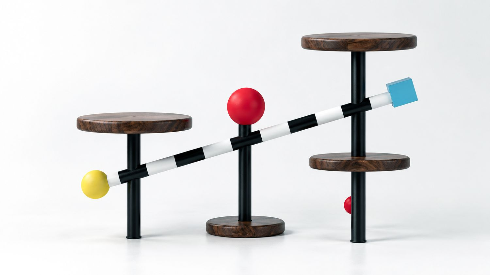

WORK 07 / 29
Why Is It Always Me?
A playful study of awkwardness, balance and everyday humour.
Year2020
StageConcept

DESIGN STORY
Why Is It Always Me? gives everyday furniture the personality of someone caught in an awkward moment. Pieces lean, stretch and balance in unexpected ways, turning familiar frustrations into visual humour. Beneath the apparent disorder, each composition searches for a workable equilibrium: an invitation to find both function and amusement in imperfect situations.





